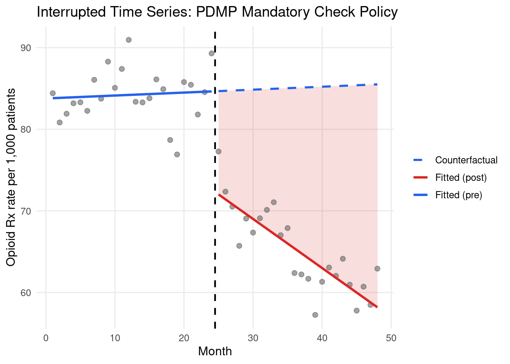
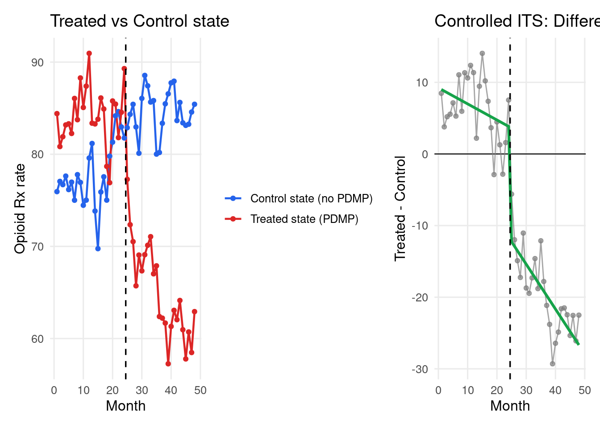
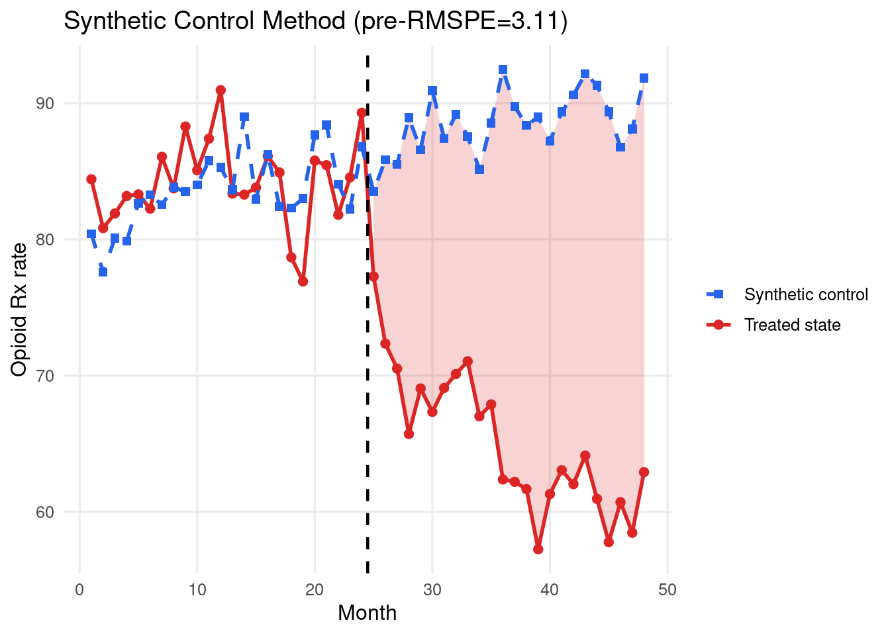
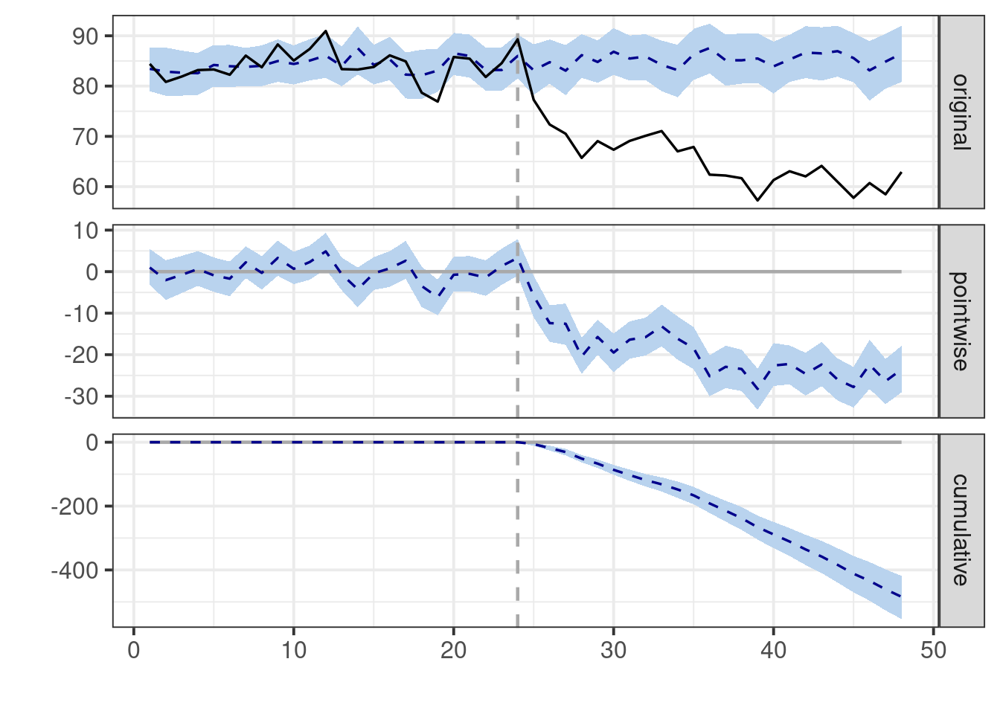

library(dplyr)
library(tidyr)
library(tibble)
library(ggplot2)
library(broom)
library(patchwork)
library(lmtest)
theme_set(
theme_minimal(base_size = 12) +
theme(
panel.background = element_rect(fill = "white", colour = NA),
plot.background = element_rect(fill = "white", colour = NA),
panel.grid.minor = element_blank()
)
)
mod06_dir <- file.path(tempdir(), "mod06")
dir.create(mod06_dir, showWarnings = FALSE, recursive = TRUE)
col_blue <- "#2563EB"
col_red <- "#DC2626"
col_green <- "#16A34A"
set.seed(42)
Health Analytics with R · Module 06: Causal Inference in Health Research
Learning objectives - Understand ITS as a quasi-experimental design for policy evaluation - Fit segmented regression to estimate level and slope changes - Assess ITS assumptions: no anticipation, no contemporaneous events - Build a synthetic control from donor units - Apply structural break detection with the Chow test - Compare ITS with and without control group (controlled ITS)
Estimated time: 3 hours | Level: Advanced | Libraries: stats, broom, ggplot2, Synth, CausalImpact
1. Setup
2. ITS Design — Opioid Prescribing Policy
Scenario: A state implemented a prescription drug monitoring programme (PDMP) mandatory check policy in month 25. We measure monthly opioid prescription rate per 1000 patients.
Segmented regression model:
Y_t = beta0 + beta1*t + beta2*D + beta3*(t - T_int)*D + e_tbeta1= pre-intervention trendbeta2= immediate level change at interventionbeta3= change in slope (trend change) post-intervention
# Simulate monthly opioid prescribing data (48 months)
T_TOTAL <- 48
T_INT <- 24 # intervention at month 25 (index 24)
TRUE_LEVEL_CHANGE <- -15.0 # immediate drop in prescriptions
TRUE_SLOPE_CHANGE <- -0.8 # additional monthly decline post-intervention
PRE_SLOPE <- 0.3 # pre-intervention increasing trend
months <- seq_len(T_TOTAL)
D <- as.integer(months > T_INT) # post-intervention indicator
t_post <- pmax(0, months - T_INT) # time since intervention
# True outcome
set.seed(42)
# Add AR(1) autocorrelation
errors <- numeric(T_TOTAL)
errors[1] <- rnorm(1, 0, 3)
for (i in 2:T_TOTAL) {
errors[i] <- 0.4 * errors[i - 1] + rnorm(1, 0, 2.5)
}
rx_rate <- (80 + PRE_SLOPE * months + TRUE_LEVEL_CHANGE * D
+ TRUE_SLOPE_CHANGE * t_post * D + errors)
df_its <- tibble(month = months, D = D, t_post = t_post, rx_rate = rx_rate)
cat(sprintf("ITS dataset: %d months | Intervention at month %d\n",
T_TOTAL, T_INT + 1))ITS dataset: 48 months | Intervention at month 25cat(sprintf("Pre-period mean: %.1f | Post-period mean: %.1f\n",
mean(rx_rate[seq_len(T_INT)]), mean(rx_rate[(T_INT + 1):T_TOTAL])))Pre-period mean: 84.2 | Post-period mean: 65.1# Segmented regression
model_its <- lm(rx_rate ~ month + D + t_post, data = df_its)
print(broom::tidy(model_its, conf.int = TRUE))# A tibble: 4 × 7
term estimate std.error statistic p.value conf.low conf.high
<chr> <dbl> <dbl> <dbl> <dbl> <dbl> <dbl>
1 (Intercept) 83.8 1.28 65.7 1.46e-45 81.2 86.3
2 month 0.0360 0.0892 0.403 6.89e- 1 -0.144 0.216
3 D -12.0 1.75 -6.87 1.76e- 8 -15.5 -8.50
4 t_post -0.637 0.126 -5.05 8.17e- 6 -0.892 -0.383# Extract key parameters
b0 <- coef(model_its)[["(Intercept)"]]
b1 <- coef(model_its)[["month"]]
b2 <- coef(model_its)[["D"]]
b3 <- coef(model_its)[["t_post"]]
cat(sprintf("\nPre-intervention slope : %.3f rx/1000/month (true: %.1f)\n",
b1, PRE_SLOPE))
Pre-intervention slope : 0.036 rx/1000/month (true: 0.3)cat(sprintf("Level change at policy : %.3f rx/1000 (true: %.1f)\n",
b2, TRUE_LEVEL_CHANGE))Level change at policy : -12.022 rx/1000 (true: -15.0)cat(sprintf("Slope change post-policy: %.3f rx/1000/month (true: %.1f)\n",
b3, TRUE_SLOPE_CHANGE))Slope change post-policy: -0.637 rx/1000/month (true: -0.8)# Chow test for a structural break at the intervention
pre_fit <- lm(rx_rate ~ month, data = df_its |> filter(month <= T_INT))
post_fit <- lm(rx_rate ~ month, data = df_its |> filter(month > T_INT))
pooled <- lm(rx_rate ~ month, data = df_its)
rss_p <- deviance(pooled)
rss_u <- deviance(pre_fit) + deviance(post_fit)
k_par <- length(coef(pooled))
n_obs <- nrow(df_its)
chow_f <- ((rss_p - rss_u) / k_par) / (rss_u / (n_obs - 2 * k_par))
chow_p <- pf(chow_f, k_par, n_obs - 2 * k_par, lower.tail = FALSE)
cat(sprintf("\nChow test for break at month %d: F=%.3f, p=%.4f\n",
T_INT + 1, chow_f, chow_p))
Chow test for break at month 25: F=37.664, p=0.0000# Counterfactual
cf_post <- b0 + b1 * months
fitted_its <- fitted(model_its)
df_plot <- df_its |>
mutate(
fitted_val = fitted_its,
cf = cf_post,
period = if_else(month <= T_INT, "pre", "post")
)
p_its <- ggplot(df_plot, aes(x = month, y = rx_rate)) +
geom_ribbon(
data = df_plot |> filter(period == "post"),
aes(ymin = pmin(fitted_val, cf), ymax = pmax(fitted_val, cf)),
fill = col_red, alpha = 0.15
) +
geom_point(alpha = 0.6, size = 2, colour = "grey40") +
geom_line(
data = df_plot |> filter(period == "pre"),
aes(y = fitted_val, colour = "Fitted (pre)"), linewidth = 1.1
) +
geom_line(
data = df_plot |> filter(period == "post"),
aes(y = fitted_val, colour = "Fitted (post)"), linewidth = 1.1
) +
geom_line(
data = df_plot |> filter(period == "post"),
aes(y = cf, colour = "Counterfactual"),
linetype = "dashed", linewidth = 1
) +
geom_vline(xintercept = T_INT + 0.5, colour = "black",
linetype = "dashed", linewidth = 0.8) +
scale_colour_manual(
values = c(
"Fitted (pre)" = col_blue,
"Fitted (post)" = col_red,
"Counterfactual" = col_blue
)
) +
labs(
x = "Month", y = "Opioid Rx rate per 1,000 patients", colour = NULL,
title = "Interrupted Time Series: PDMP Mandatory Check Policy"
)
print(p_its)
ggsave(file.path(mod06_dir, "its_segmented.png"), p_its,
width = 12, height = 5, dpi = 120)
# Cumulative effect at end of follow-up
total_effect <- b2 + b3 * (T_TOTAL - T_INT)
cat(sprintf("\nCumulative effect by month %d: %.1f rx/1000\n",
T_TOTAL, total_effect))
Cumulative effect by month 48: -27.3 rx/1000cat(sprintf("Projected over 12 months post-policy: %.1f rx/1000\n",
b2 + b3 * 12))Projected over 12 months post-policy: -19.7 rx/10003. Controlled ITS with Comparison Series
# Controlled ITS: subtract control group trajectory to remove confounders
# Control group: neighbouring state without PDMP policy
set.seed(99)
control_errors <- numeric(T_TOTAL)
control_errors[1] <- rnorm(1, 0, 3)
for (i in 2:T_TOTAL) {
control_errors[i] <- 0.4 * control_errors[i - 1] + rnorm(1, 0, 2.5)
}
# Control state: similar pre-trend, NO treatment effect
rx_control <- 75 + PRE_SLOPE * months + control_errors
df_its$rx_control <- rx_control
df_its$diff <- df_its$rx_rate - df_its$rx_control
# ITS on the difference series
model_diff <- lm(diff ~ month + D + t_post, data = df_its)
b2_ctrl <- coef(model_diff)[["D"]]
b3_ctrl <- coef(model_diff)[["t_post"]]
cat("Controlled ITS (treatment - control):\n")Controlled ITS (treatment - control):cat(sprintf(" Level change : %.3f (true: %.1f)\n", b2_ctrl, TRUE_LEVEL_CHANGE)) Level change : -15.482 (true: -15.0)cat(sprintf(" Slope change : %.3f (true: %.1f)\n", b3_ctrl, TRUE_SLOPE_CHANGE)) Slope change : -0.402 (true: -0.8)df_ctrl_long <- df_its |>
select(month, rx_rate, rx_control) |>
tidyr::pivot_longer(c(rx_rate, rx_control),
names_to = "series", values_to = "rate") |>
mutate(series = recode(series,
rx_rate = "Treated state (PDMP)",
rx_control = "Control state (no PDMP)"))
p_tc <- ggplot(df_ctrl_long, aes(x = month, y = rate, colour = series)) +
geom_line(linewidth = 0.8) +
geom_point(size = 1.4) +
geom_vline(xintercept = T_INT + 0.5, colour = "black",
linetype = "dashed", linewidth = 0.6) +
scale_colour_manual(values = c(
"Treated state (PDMP)" = col_red,
"Control state (no PDMP)" = col_blue
)) +
labs(x = "Month", y = "Opioid Rx rate", colour = NULL,
title = "Treated vs Control state")
p_diff <- ggplot(df_its, aes(x = month, y = diff)) +
geom_hline(yintercept = 0, colour = "black", linewidth = 0.4) +
geom_line(colour = "grey50", linewidth = 0.5, alpha = 0.7) +
geom_point(colour = "grey50", size = 1.4, alpha = 0.7) +
geom_line(aes(y = fitted(model_diff)), colour = col_green, linewidth = 1.1) +
geom_vline(xintercept = T_INT + 0.5, colour = "black",
linetype = "dashed", linewidth = 0.6) +
labs(x = "Month", y = "Treated - Control",
title = "Controlled ITS: Difference series")
p_cits <- p_tc + p_diff
print(p_cits)
ggsave(file.path(mod06_dir, "controlled_its.png"), p_cits,
width = 14, height = 5, dpi = 120)4. Synthetic Control Method
# Synthetic control: find weighted combination of donor states that
# best matches the treated state's pre-intervention outcome trajectory
set.seed(42)
N_DONORS <- 8
T_PRE <- T_INT # pre-intervention period
T_POST <- T_TOTAL - T_INT
# Simulate donor states (each with different base rates and trends)
donor_baselines <- runif(N_DONORS, 60, 100)
donor_trends <- runif(N_DONORS, 0.1, 0.5)
donor_noise <- matrix(rnorm(N_DONORS * T_TOTAL, 0, 2), nrow = N_DONORS)
donors <- matrix(NA_real_, nrow = N_DONORS, ncol = T_TOTAL)
for (i in seq_len(N_DONORS)) {
donors[i, ] <- donor_baselines[i] + donor_trends[i] * months + donor_noise[i, ]
}
# True weights that would reconstruct treated pre-trend
# (in practice, we solve an optimisation problem)
synth_loss <- function(par, donors_pre, treated_pre) {
# weights must sum to 1 and be non-negative (softmax)
w <- exp(par)
w <- w / sum(w)
synth <- as.numeric(w %*% donors_pre)
sum((synth - treated_pre)^2)
}
treated_pre <- rx_rate[seq_len(T_PRE)]
donors_pre <- donors[, seq_len(T_PRE), drop = FALSE]
opt <- stats::optim(
par = rep(0, N_DONORS),
fn = synth_loss,
donors_pre = donors_pre,
treated_pre = treated_pre,
method = "BFGS"
)
w_opt <- exp(opt$par)
w_opt <- w_opt / sum(w_opt)
cat("Optimal weights:", paste(sprintf("%.3f", w_opt), collapse = ", "), "\n")Optimal weights: 0.000, 0.000, 0.000, 0.000, 0.000, 1.000, 0.000, 0.000 cat(sprintf("Weight sum: %.4f\n", sum(w_opt)))Weight sum: 1.0000# Construct synthetic control
synth_control <- as.numeric(w_opt %*% donors) # length T_TOTAL
# Pre-period fit quality
rmspe_pre <- sqrt(mean((rx_rate[seq_len(T_PRE)] - synth_control[seq_len(T_PRE)])^2))
cat(sprintf("Pre-period RMSPE: %.3f (lower = better synthetic control fit)\n",
rmspe_pre))Pre-period RMSPE: 3.108 (lower = better synthetic control fit)df_sc <- tibble(
month = months,
treated = rx_rate,
synth = synth_control
)
p_sc <- ggplot(df_sc, aes(x = month)) +
geom_ribbon(
data = df_sc |> filter(month > T_INT),
aes(ymin = pmin(treated, synth), ymax = pmax(treated, synth)),
fill = col_red, alpha = 0.2
) +
geom_line(aes(y = treated, colour = "Treated state"), linewidth = 1) +
geom_point(aes(y = treated, colour = "Treated state"), size = 2) +
geom_line(aes(y = synth, colour = "Synthetic control"),
linetype = "dashed", linewidth = 1) +
geom_point(aes(y = synth, colour = "Synthetic control"),
shape = 15, size = 2) +
geom_vline(xintercept = T_INT + 0.5, colour = "black",
linetype = "dashed", linewidth = 0.8) +
scale_colour_manual(values = c("Treated state" = col_red,
"Synthetic control" = col_blue)) +
labs(
x = "Month", y = "Opioid Rx rate", colour = NULL,
title = sprintf("Synthetic Control Method (pre-RMSPE=%.2f)", rmspe_pre)
)
print(p_sc)
ggsave(file.path(mod06_dir, "synthetic_control.png"), p_sc,
width = 12, height = 5, dpi = 120)
# ATT estimate post-policy
att_synth <- mean(rx_rate[(T_INT + 1):T_TOTAL] - synth_control[(T_INT + 1):T_TOTAL])
true_avg_post <- mean(TRUE_LEVEL_CHANGE + TRUE_SLOPE_CHANGE * seq_len(T_POST) / 2)
cat(sprintf("\nATT estimate (synthetic control): %.2f rx/1000/month\n", att_synth))
ATT estimate (synthetic control): -23.46 rx/1000/monthcat(sprintf("True average post-policy effect : %.2f\n", true_avg_post))True average post-policy effect : -20.00# Same problem with the Synth package (Abadie, Diamond & Hainmueller)
library(Synth)##
## Synth Package: Implements Synthetic Control Methods.## See https://web.stanford.edu/~jhain/synthpage.html for additional information.foo <- bind_rows(
tibble(unit = 1L, unit_name = "Treated", month = months, rx_rate = rx_rate),
lapply(seq_len(N_DONORS), function(i) {
tibble(
unit = i + 1L,
unit_name = paste0("Donor", i),
month = months,
rx_rate = donors[i, ]
)
}) |> bind_rows()
)
dataprep_out <- dataprep(
foo = as.data.frame(foo),
predictors = "rx_rate",
predictors.op = "mean",
time.predictors.prior = seq_len(T_PRE),
special.predictors = list(
list("rx_rate", 6, "mean"),
list("rx_rate", 12, "mean"),
list("rx_rate", 18, "mean"),
list("rx_rate", 24, "mean")
),
dependent = "rx_rate",
unit.variable = "unit",
unit.names.variable = "unit_name",
time.variable = "month",
treatment.identifier = 1,
controls.identifier = 2:(N_DONORS + 1),
time.optimize.ssr = seq_len(T_PRE),
time.plot = seq_len(T_TOTAL)
)
synth_out <- synth(dataprep_out)
w_synth_pkg <- as.numeric(synth_out$solution.w)
cat("Synth package weights:", paste(sprintf("%.3f", w_synth_pkg), collapse = ", "), "\n")Synth package weights: 0.000, 0.000, 0.000, 0.074, 0.000, 0.893, 0.000, 0.033 Y1 <- dataprep_out$Y1plot
Y0 <- dataprep_out$Y0plot
synth_pkg <- as.numeric(Y0 %*% synth_out$solution.w)
rmspe_pkg <- sqrt(mean((Y1[seq_len(T_PRE), 1] - synth_pkg[seq_len(T_PRE)])^2))
att_pkg <- mean(Y1[(T_INT + 1):T_TOTAL, 1] - synth_pkg[(T_INT + 1):T_TOTAL])
cat(sprintf("Synth package pre-RMSPE: %.3f | ATT: %.2f\n", rmspe_pkg, att_pkg))Synth package pre-RMSPE: 3.024 | ATT: -24.66# Optional: CausalImpact (Bayesian structural time series)
library(CausalImpact)Loading required package: bstsLoading required package: BoomSpikeSlabLoading required package: Boom
Attaching package: 'Boom'The following object is masked from 'package:stats':
rWishart
Attaching package: 'BoomSpikeSlab'The following object is masked from 'package:stats':
knotsLoading required package: xts
######################### Warning from 'xts' package ##########################
# #
# The dplyr lag() function breaks how base R's lag() function is supposed to #
# work, which breaks lag(my_xts). Calls to lag(my_xts) that you type or #
# source() into this session won't work correctly. #
# #
# Use stats::lag() to make sure you're not using dplyr::lag(), or you can add #
# conflictRules('dplyr', exclude = 'lag') to your .Rprofile to stop #
# dplyr from breaking base R's lag() function. #
# #
# Code in packages is not affected. It's protected by R's namespace mechanism #
# Set `options(xts.warn_dplyr_breaks_lag = FALSE)` to suppress this warning. #
# #
###############################################################################
Attaching package: 'xts'The following objects are masked from 'package:dplyr':
first, last
Attaching package: 'bsts'The following object is masked from 'package:BoomSpikeSlab':
SuggestBurnci_mat <- cbind(rx_rate, t(donors))
colnames(ci_mat) <- c("y", paste0("donor", seq_len(N_DONORS)))
pre.period <- c(1, T_INT)
post.period <- c(T_INT + 1, T_TOTAL)
set.seed(42)
impact <- CausalImpact(
ci_mat, pre.period, post.period,
model.args = list(niter = 1000, nseasons = 1)
)
cat("CausalImpact summary:\n")CausalImpact summary:print(summary(impact))Posterior inference {CausalImpact}
Average Cumulative
Actual 65 1562
Prediction (s.d.) 85 (1.5) 2047 (36.3)
95% CI [83, 88] [1981, 2116]
Absolute effect (s.d.) -20 (1.5) -484 (36.3)
95% CI [-23, -17] [-554, -419]
Relative effect (s.d.) -24% (1.4%) -24% (1.4%)
95% CI [-26%, -21%] [-26%, -21%]
Posterior tail-area probability p: 0.001
Posterior probability of an effect: 99.9%
For more details, type: summary(impact, "report")
NULLp_ci <- plot(impact)
print(p_ci)
ggsave(file.path(mod06_dir, "causal_impact.png"), p_ci,
width = 12, height = 8, dpi = 120)5. Knowledge Check
- The ITS model finds a slope change of -0.8 but the level change is not significant (p=0.14). How do you interpret the policy’s effect?
- A contemporaneous event (economic recession) began at month 25, the same time as the PDMP policy. How does this threaten ITS validity?
- The synthetic control has pre-period RMSPE=8.5. Is this adequate? What does a high RMSPE imply?
- With only 12 pre-intervention time points, what problems arise for the ITS analysis?
- Implement a permutation test for the synthetic control: swap the treated state with each donor and compute the post/pre RMSPE ratio.
# Exercise 5 — Synthetic control permutation test (placebo inference)
fit_synth_weights <- function(donors_pre_d, treated_pre_d) {
n_d <- nrow(donors_pre_d)
opt_d <- stats::optim(
par = rep(0, n_d),
fn = synth_loss,
donors_pre = donors_pre_d,
treated_pre = treated_pre_d,
method = "BFGS"
)
w <- exp(opt_d$par)
w / sum(w)
}
rmspe_ratios <- numeric(N_DONORS)
# For each donor, pretend it's the treated state
for (d in seq_len(N_DONORS)) {
treated_d <- donors[d, ]
donors_d <- donors[-d, , drop = FALSE]
donors_pre_d <- donors_d[, seq_len(T_PRE), drop = FALSE]
treated_pre_d <- treated_d[seq_len(T_PRE)]
w_d <- fit_synth_weights(donors_pre_d, treated_pre_d)
synth_d <- as.numeric(w_d %*% donors_d)
rmspe_pre_d <- sqrt(mean((treated_d[seq_len(T_PRE)] - synth_d[seq_len(T_PRE)])^2))
rmspe_post_d <- sqrt(mean((treated_d[(T_PRE + 1):T_TOTAL] -
synth_d[(T_PRE + 1):T_TOTAL])^2))
rmspe_ratios[d] <- if (rmspe_pre_d > 0) rmspe_post_d / rmspe_pre_d else NA_real_
}
# True treated state ratio
rmspe_post <- sqrt(mean((rx_rate[(T_INT + 1):T_TOTAL] -
synth_control[(T_INT + 1):T_TOTAL])^2))
ratio_treated <- rmspe_post / rmspe_pre
cat("Synthetic Control Permutation Test (post/pre RMSPE ratios):\n")Synthetic Control Permutation Test (post/pre RMSPE ratios):cat(sprintf(" Treated state ratio : %.2f\n", ratio_treated)) Treated state ratio : 7.83cat(sprintf(" Donor ratios : %s\n",
paste(sprintf("%.2f", rmspe_ratios), collapse = ", "))) Donor ratios : 1.13, 1.13, 0.54, 0.72, 1.71, 2.06, 1.47, 0.54p_val <- mean(rmspe_ratios[!is.na(rmspe_ratios)] >= ratio_treated)
cat(sprintf(" Permutation p-value : %.3f\n", p_val)) Permutation p-value : 0.000cat(sprintf(" Inference: %s at 10%% level\n",
if (p_val < 0.10) "Significant" else "Not significant")) Inference: Significant at 10% levelNext -> NB-05: Instrumental Variables